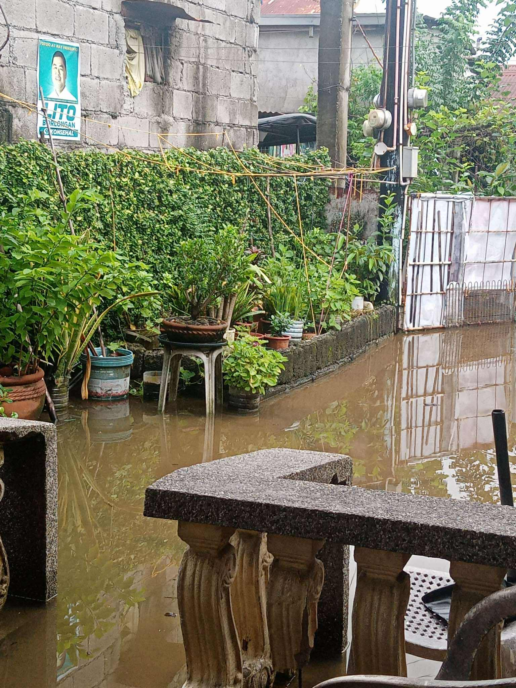
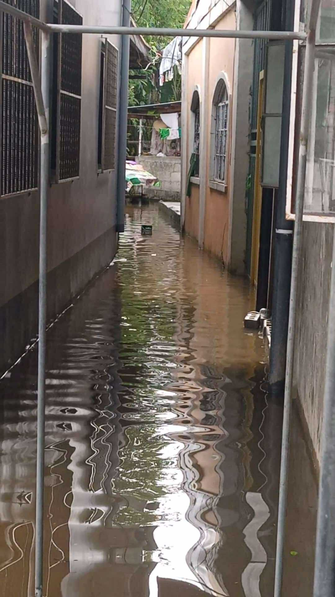

Brgy. Cutcot · Pulilan
People needing help: 12
Water reached knee level. Roads blocked.
Pulilan · Plaridel · Calumpit — municipality-centered markers
25
0
0
Moderate
| Sensor | Flood Level | Status |
|---|---|---|
| Angat River | 1.20 m | Alert |
Tip: choose municipality → barangay to center the map.

